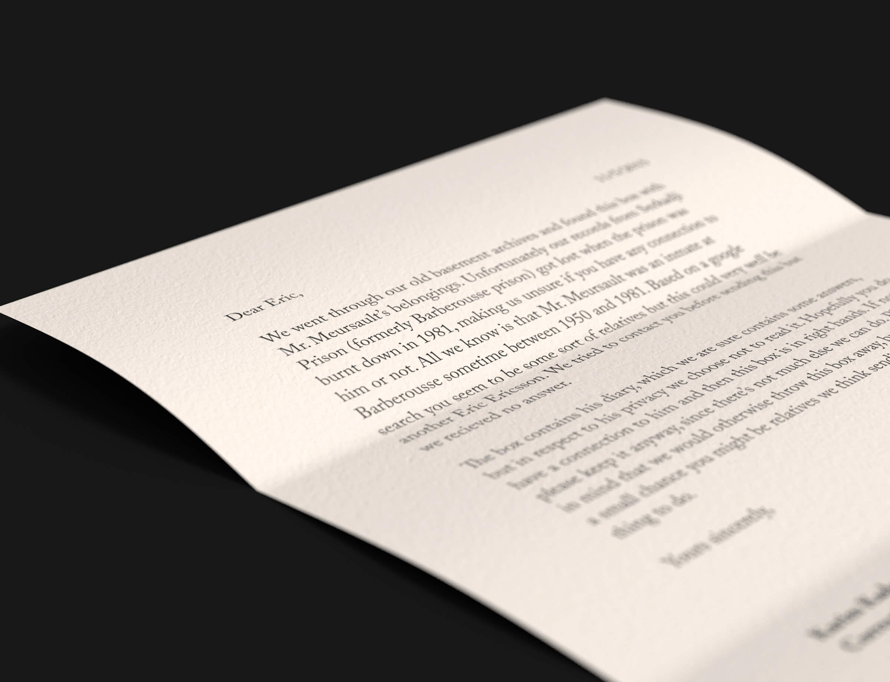

This was part of my application for Beckmans College of Design and the task was to create a book cover for The
Stranger by Albert Camus.
The book is written in first-person and is about Arthur Meursault, who is sent to prison in 1950s Algeria for
murder.
Based on this sentence from the book, I created his belongings box from prison:
“When I was brought to the prison, they took away my belt, my shoelaces, and the contents of my pockets,
including my cigarettes”.
The box also contains his diary, in which the whole story is taking place.
That means I had to hand-write the whole book, in French, for it too feel authentic.
Finally, I sent the box to Beckmans jury-member Eric Ericsson, under cover of a made-up story about him being
the
last potential relative to Arthur Meursault.
The idea was to make him feel as if the box was accidently sent to him, making him curious and eventually
snooping and reading the diary (which is the book).
